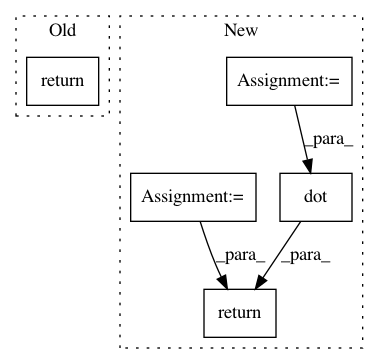

c1bbd364d583149aa5acf12214ba297d3365b386,RBM.py,RBM,__compute_visible_units,#RBM#,31
Before Change
return
def __compute_visible_units(self):
return
After Change
def __compute_visible_units(self, matrix_weights, vector_hidden_units, vector_bias_visible):
W, h, b = matrix_weights, vector_hidden_units, vector_bias_visible
return self.__sigmoid(np.dot(h, W) + b)
In pattern: SUPERPATTERN
Frequency: 4
Non-data size: 5
Instances
Project Name: albertbup/deep-belief-network
Commit Name: c1bbd364d583149aa5acf12214ba297d3365b386
Time: 2015-07-14
Author: albert.busque@infantium.com
File Name: RBM.py
Class Name: RBM
Method Name: __compute_visible_units
Project Name: LCAV/pyroomacoustics
Commit Name: 5214393bb75498ded8fc140914edd79c1799af05
Time: 2017-04-04
Author: fakufaku@gmail.com
File Name: pyroomacoustics/beamforming.py
Class Name: Beamformer
Method Name: steering_vector_2D_from_point
Project Name: albertbup/deep-belief-network
Commit Name: c1bbd364d583149aa5acf12214ba297d3365b386
Time: 2015-07-14
Author: albert.busque@infantium.com
File Name: RBM.py
Class Name: RBM
Method Name: __compute_hidden_units
Project Name: LCAV/pyroomacoustics
Commit Name: 7a77233231c67038271c9945760b7a1d711b242d
Time: 2017-04-04
Author: fakufaku@gmail.com
File Name: pyroomacoustics/beamforming.py
Class Name: Beamformer
Method Name: steering_vector_2D_from_point